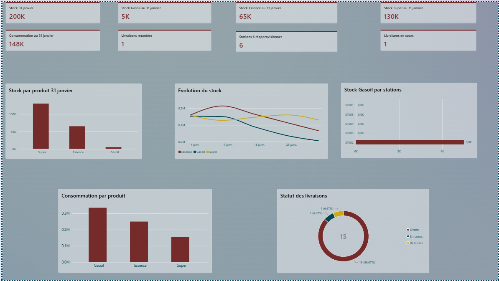

Spécialiste de la coordination logistique internationale, des approvisionnements et du pilotage des opérations. Je conçois des tableaux de bord interactifs et des workflows automatisés pour convertir les flux de données brutes en leviers de décision stratégiques et opérationnels.
Suite d'outils digitaux conçue pour centraliser, automatiser et piloter l'ensemble des flux opérationnels Supply Chain.
| Suite | ChainPilot Command & Tracker |
| Spécialité | Supply Chain & Logistique |
| Concepteur | Magatte Samaké |

Démonstration de l'analyse de données appliquée au réapprovisionnement et au maintien des stocks d'un réseau de stations-service.
| Secteur | Pétrole & Énergie |
| Objectif | Optimisation des réapprovisionnements |
| Statut | Mis à jour : Sept. 2026 |
Pilotage d'expéditions de bout en bout en groupage (LCL) et hors groupage (FCL / Direct) sur 4 corridors stratégiques.
| Partenaire Institutionnel | La Poste Sénégal |
| Gestion d'Incidents | Resolution de bout en bout |
| Évaluation Prestataires | Continue (Qualité/Délai) |
| Systèmes & Analytics | Power BI, Power Query, Excel Avancé, Google Sheets, Apps Script, Platform SAWA |
| Opérations Logistiques | Groupage & hors groupage, cotations fret B2B, logistique carburant (chargements citernes, stocks), traçabilité des flux |
| Procurement & Achats | Sourcing, évaluation fournisseurs/transporteurs, gestion des bons de commande, dépouillement d'appels d'offres |
| Formation | Master Supply Chain Management & Licence BBA Transports/Logistique (IAM Dakar) |
| Langues | Français (Bilingue), Anglais (Professionnel), Wolof (Langue maternelle) |